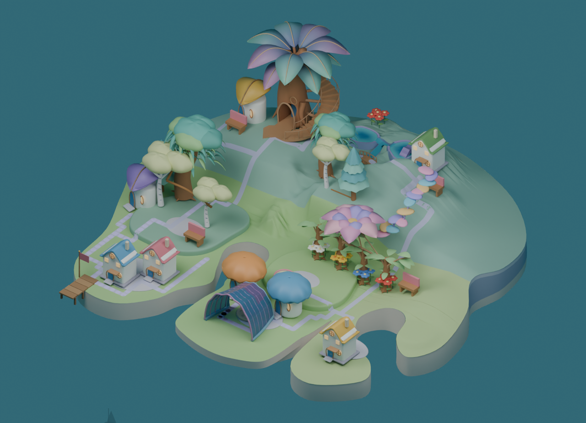
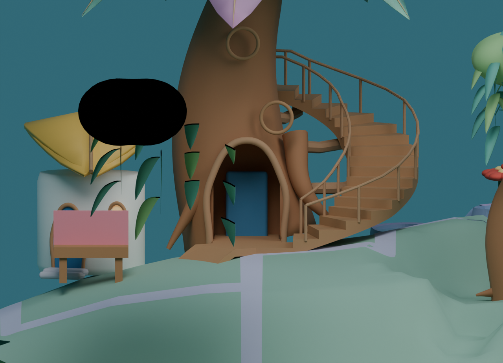
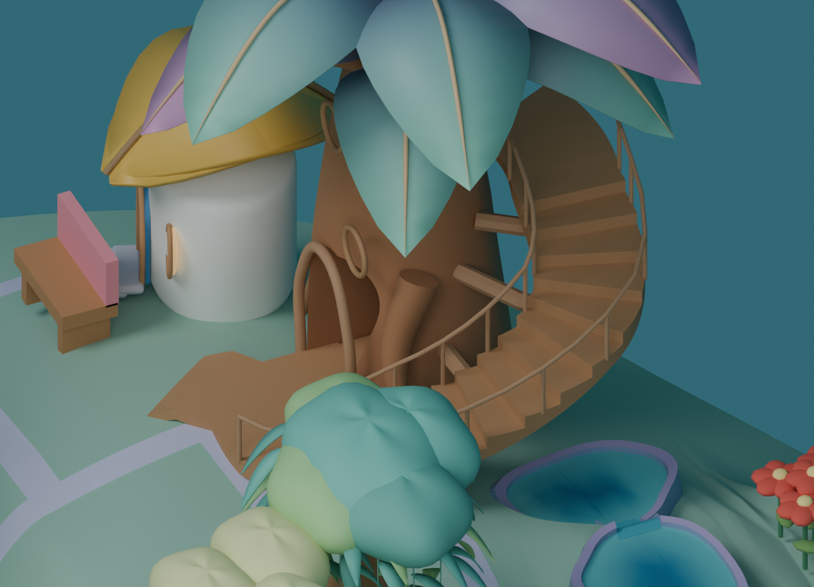

P02の実16段 — 段と支えが見える形へ
滑らかな帯状だったv4から、実際の踏面・蹴上げ・手すり・幹からの支えを持つ階段に変わりました。近景では階段として読み取れます。一方、上階の居場所と入口のつながり、島全体の美術はまだHOLDです。住人の足を踏段ごとに置く動作は未実装です。
最初の入口近景は旧cameraを継いだため、手前の葉と黒い近接切断が重なりました。geometryやvisibilityを変えず、cameraだけを変えた追加画像も下に並べています。保存値を照合すると、端線に沿う最大3.51cm・合計25.73cmの未被覆は、元の照会線とFloat32外周のずれでした。穴の厚みを表す数字ではありません。一方、可視床の再三角形化による微小欠け39片は別に残っています。geometryや判定幅を変えて合格にしたものではありません。
source美術：HOLD ／ 独立理解・安全：未検証 N=0 ／ runtime：未統合。 全画像はBlender sourceです。実アプリtarget・build・delivery flagはなく、本体での表示や通行の証拠にはしません。v5では道だけのshadow設定を本体に合わせてfalseにしたため、v4との差をすべて階段の変更へ帰属させません。
追加の3/4近景では黒い近接切断が消え、踏面・両側の手すり・幹からの支えが確認できます。元の樹冠が下部を、扇葉が上回廊の一部を隠しています。16段の方式を作業の基盤にします。身体接触305件を分類し、実際の踏段動作で解決すべき蹴上げ接触167件を特定しました。次は9種の実モデルで、片足を踏面に残し、もう片足を段の上へ運ぶ動作を検証します。
判定と画像SHA · 保存値の接触分類 · 原記録 · 制作記録
採用native-05 — 全島の目標 v5 — 16段・支え・手すりを含む全景
v5 — 16段・支え・手すりを含む全景
v4 — 支え・手すり未生成の滑らかな床 v5 — 旧cameraの入口近景・前景の遮蔽あり
v5 — 旧cameraの入口近景・前景の遮蔽あり
v5 — cameraだけを変えた3/4近景